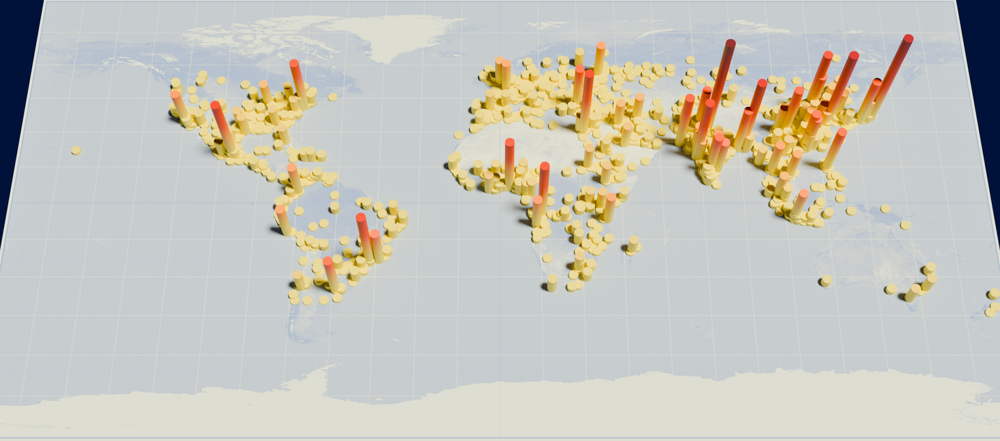
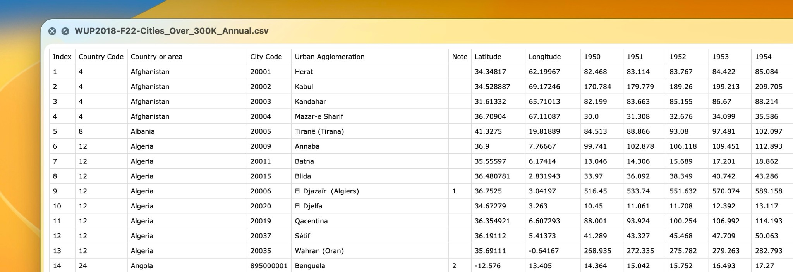
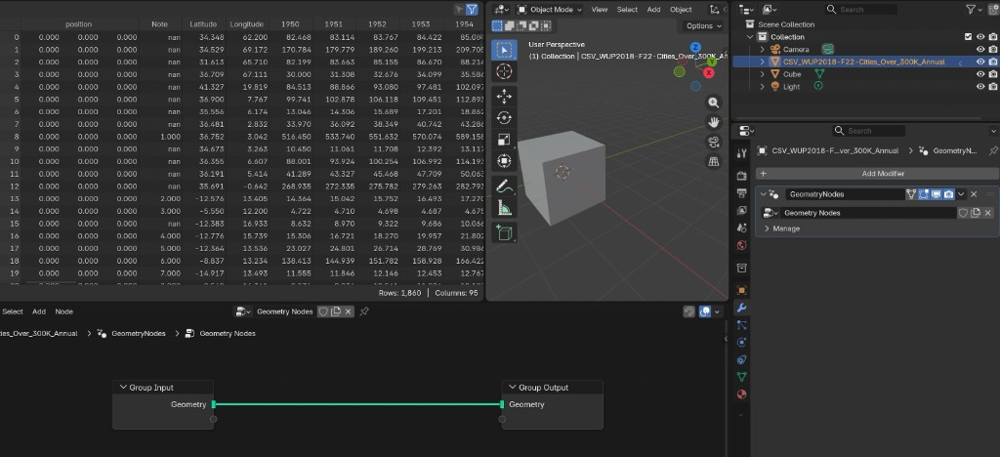
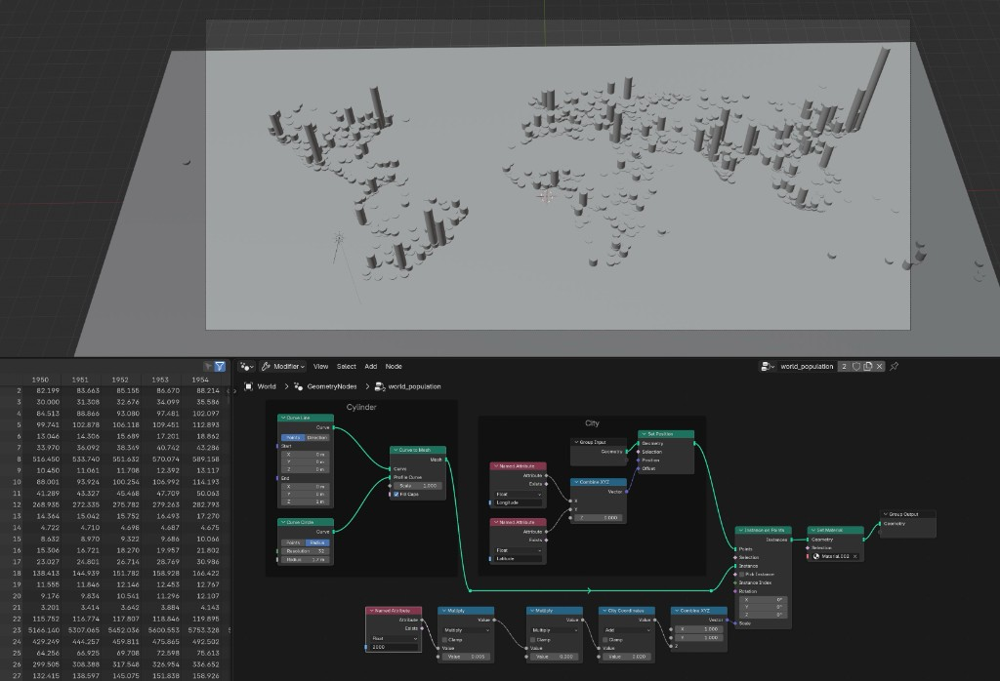
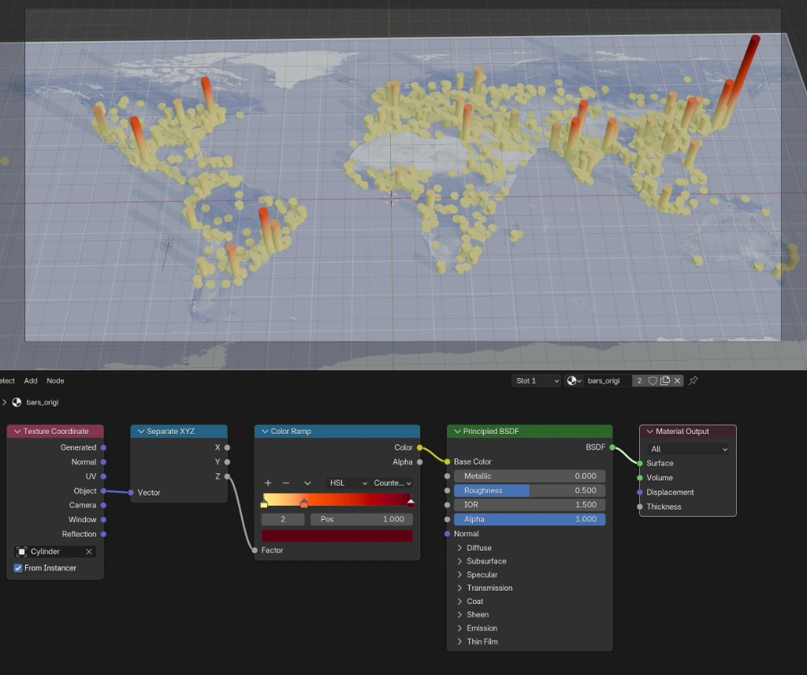
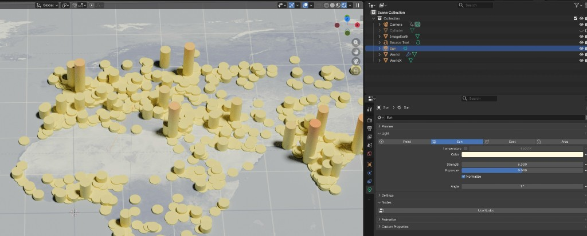
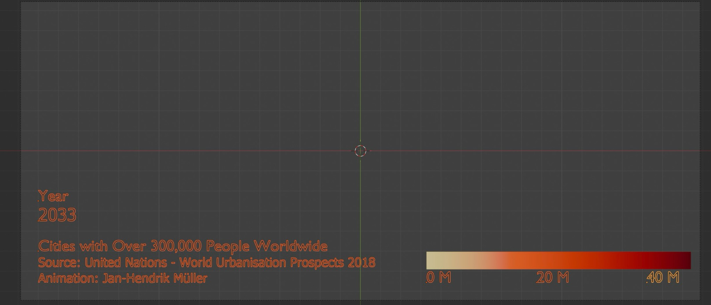

Animated World Population¶
In this tutorial, we will learn how to visualize a time series of the world population in Blender 5.0.1.
Here's how the final result looks as an image:

And here as a video:
Download earth_population.blend
Preparing Data¶
We start with a simple CSV file that contains urban agglomeration population data from the United Nations World Urbanization Prospects (WUP2018).
Download WUP2018-F22-Cities_Over_300K_Annual.csv

From this dataset, we want the following columns:
- Latitude and Longitude — the geographic coordinates
- 1950–2035 — the population values for each year
Import into Blender¶
First, install the CSV Importer add-on and drag'n'drop the dataset into Blender's viewport.
Now we will see the spreadsheet like this:

Next, we add a background image. A good choice is an equirectangular projection of the Earth, since the latitude and longitude values from our dataset map directly to x and y coordinates in this projection.

Source: Wikimedia Commons — Equirectangular projection
{kind=link}
Now we scale it to match the Earth's longitude and latitude, and adjust the colors with shader nodes:

With this in place, we continue to add the data as bar charts using Geometry Nodes:

To color the bars, we create a separate reference cylinder and assign a material to it. This material uses a Color Ramp driven by the Z height of each bar, so taller bars appear in warmer colors. The Geometry Nodes setup then applies this material to all instanced bars automatically.

To animate the bars over time, we replace part of the node tree so that it reads the year columns dynamically and interpolates between them. A single value input drives the current year: using Floor and Ceiling, we look up the two neighboring columns by name, then mix between them based on the fractional part. This way, scrubbing through the timeline smoothly transitions the bar heights from one year to the next.

We add a Sun light object for lighting and switch to the Cycles render engine.

Finally, we add a separate scene for the overlay: Showing the current year, title, data source, and a color legend. This overlay is rendered separately from the main 3D scene and then combined in DaVinci Resolve.

Download earth_population.blend
Here's the final result:
If you come up with your own creations and post them online, you're welcome to tag me on Bluesky!